library(dplyr)
library(ggplot2)
library(readr)
library(palmerpenguins)
library(knitr)
library(biol202)7 Visualizing associations between two variables
Tutorial learning objectives
In this tutorial you will:
- Learn how to visualize associations between two categorical variables using a contingency table
- Learn how to visualize associations between two categorical variables graphically
- Learn how to visualize associations between two numerical variables
- Learn how to visualize associations between a numerical response variable and a categorical explanatory variable
Background
The type of graph that is most suitable for visualizing an association between two variables depends upon the type of data being visualized:
- If both variables are categorical, we can visualize the association in a table called a contingency table, or we can visualize the association graphically using a grouped bar chart or a stacked relative frequency bar graph
- If both variables are numeric, we visualize the association graphically using a scatterplot
- If the response variable is numerical and the explanatory variable is categorical, we visualize the association graphically using a strip chart, boxplot, or variations on these
- We do not discuss the scenario where the response variable is categorical and the explanatory variable is numerical
In this tutorial you’ll learn to construct and interpret each of these types of visualization. In later tutorials you’ll learn how to conduct statistical analyses of these associations.
7.1 Load packages and import data
Let’s load some familiar packages first:
We also need the janitor and ggExtra packages, and these are likely to be new to you. Both were installed for you when you installed the biol202 package, so you only need to load them.
Load the packages:
library(janitor)
library(ggExtra)Import Data
We’ll again make use of the penguins dataset, which gets loaded as a “tibble” object with the palmerpenguins package.
Load the locust dataset, which is described in the Whitlock & Schluter text, Figure 2.1-2.
data(locust)Load the bird_malaria dataset, which is described in the Whitlock & Schluter text, Example 2.3A (p. 40).
data(bird_malaria)
CautionActivity
Get an overview of the locust and bird_malaria tibbles.
7.2 Visualizing association between two categorical variables
We’ll cover three ways to visualize associations between two categorical variables:
- a contingency table
- a grouped bar graph
- a stacked relative frequency bar graph
7.2.1 Constructing a contingency table
Note
New tool The tabyl function from the janitor package is useful for creating contingency tables, or more generally, cross-tabulating frequencies for multiple categorical variables.
You can check out more about the tabyl function at this vignette.
Let’s use the bird_malaria dataset for our demonstration.
If you got an overview of the dataset, as suggested as part of the activity in the preceding section, you would have seen that the bird_malaria tibble includes two categorical variables: treatment and response, each with 2 categories.
The dataset includes 65 rows. Each row corresponds to an individual (unique) bird. Thirty of the birds were randomly assigned to the “Control” treatment group, and 35 were randomly assigned to the “Egg removal” treatment group.
The response variable includes the categories “Malaria” and “No Malaria”, indicating whether the bird contracted Malaria after the treatment.
Our goal is to visualize the frequency of birds that fall into each of the four unique combinations of category:
- Control + No Malaria
- Control + Malaria
- Egg removal + No Malaria
- Egg removal + Malaria
More specifically, we are interested in comparing the incidence of malaria among the Control and Egg removal treatment groups. We’ll learn in a later tutorial how to conduct this comparison statistically.
Let’s provide the code, then explain after. We’ll again make use of the kable function from the knitr package to help present a nice table. So first we create the table (“bird_malaria.table”), then in a later code chunk we’ll output a nice version of the table using the kable function.
First create the basic contingency table:
bird_malaria.freq <- bird_malaria %>%
tabyl(treatment, response)Code explanation:
- the first line is telling R to assign any output from our commands to the object called “bird_malaria.freq”
- the first line is also telling R that we’re using the
bird_malariaobject as input to our subsequent functions, and the pipe (%>%) tells R there’s more to come. - the second line uses the
tabylfunction, and we provide it with the names of the variables from thebird_malariaobject that we want to use for tabulating frequencies. Here we provide the variable names “treatment”, and “response”
Let’s look at the table:
bird_malaria.freq
#> treatment Malaria No Malaria
#> Control 7 28
#> Egg removal 15 15It is typically a good idea to also include the row and column totals in a contingency table.
To do this, we use the adorn_totals function, from the janitor package, as follows, and we’ll create a new object called “bird_malaria.freq.totals”:
bird_malaria.freq.totals <- bird_malaria %>%
tabyl(treatment, response) %>%
adorn_totals(where = c("row", "col"))- the last line tells the
adorn_totalsfunction that we want to add the row and column totals to our table
Now let’s see what the table looks like before using the kable function. To do this, just provide the name of the object:
bird_malaria.freq.totals
#> treatment Malaria No Malaria Total
#> Control 7 28 35
#> Egg removal 15 15 30
#> Total 22 43 65Now let’s use the kable function to improve the look, and add a table heading.
bird_malaria.freq.totals %>%
kable(caption = "Contingency table showing the incidence of malaria in female great tits in relation to experimental treatment", booktabs = TRUE)| treatment | Malaria | No Malaria | Total |
|---|---|---|---|
| Control | 7 | 28 | 35 |
| Egg removal | 15 | 15 | 30 |
| Total | 22 | 43 | 65 |
Relative frequencies
Often it is useful to also present a contingency table that shows the relative frequencies. However, it’s important to know how to calculate those relative frequencies.
For instance, recall that in this malaria example, we are interested in comparing the incidence of malaria among the Control and Egg removal treatment groups. Thus, we should calculate the relative frequencies using the row totals. This will become clear when we show the table.
We can get relative frequencies, which are equivalent to proportions, using the adorn_percentages function (the function name is a misnomer, because we’re calculating proportions, not percentages!), and telling R to use the row totals for the calculations.
First create the new table object “bird_malaria.prop”:
bird_malaria.prop <- bird_malaria %>%
tabyl(treatment, response) %>%
adorn_percentages("row")Now present it using kable:
bird_malaria.prop %>%
kable(caption = "Contingency table showing the relative frequency of malaria in female great tits in relation to experimental treatment", booktabs = TRUE)| treatment | Malaria | No Malaria |
|---|---|---|
| Control | 0.2 | 0.8 |
| Egg removal | 0.5 | 0.5 |
7.2.2 Constructing a grouped bar graph
To construct a grouped bar graph, we first need wrangle (reformat) the data to be in the form of a frequency table.
Let’s revisit what the bird_malaria tibble looks like:
bird_malaria
#> # A tibble: 65 × 3
#> bird treatment response
#> <dbl> <fct> <fct>
#> 1 1 Control Malaria
#> 2 2 Control Malaria
#> 3 3 Control Malaria
#> 4 4 Control Malaria
#> 5 5 Control Malaria
#> 6 6 Control Malaria
#> 7 7 Control Malaria
#> 8 8 Egg removal Malaria
#> 9 9 Egg removal Malaria
#> 10 10 Egg removal Malaria
#> # ℹ 55 more rowsTo wrangle this into the appropriate format, here’s the appropriate code:
bird_malaria.tidy <- bird_malaria %>%
group_by(treatment) %>%
count(response)This is similar to what you learned in a previous tutorial, but here we’ve added a new function!
Note
New tool The group_by function from the dplyr package enables one to apply a function to each category of a categorical variable. See more help using “?group_by”.
In the preceding code chunk, we’re tallying the observations in the two “treatment” variable categories, but also keeping track of which category of “response” the individual belongs to.
Let’s have a look at the result:
bird_malaria.tidy
#> # A tibble: 4 × 3
#> # Groups: treatment [2]
#> treatment response n
#> <fct> <fct> <int>
#> 1 Control Malaria 7
#> 2 Control No Malaria 28
#> 3 Egg removal Malaria 15
#> 4 Egg removal No Malaria 15We now have what we need for a grouped bar chart, using the ggplot function:
ggplot(data = bird_malaria.tidy, aes(x = treatment, y = n, fill = response)) +
geom_bar(stat = "identity", position = position_dodge()) +
ylab("Frequency") +
xlab("Treatment group") +
theme_bw()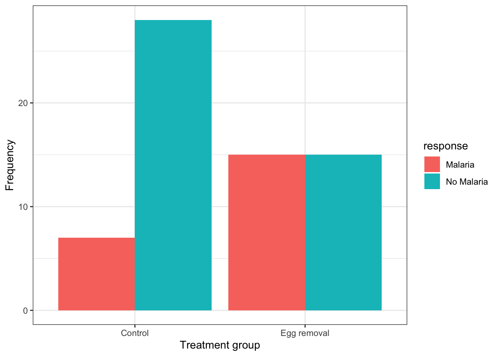
This code is similar to what we used previously to create a bar graph, but there are two key differences:
- in the first line within the
aesfunction, we include a new argumentfill = response, telling R to use different bar fill colours based on the categories in the “response” variable.
- in the second line, we provide a new argument to the
geom_barfunction:position = position_dodge(), which tells R to use separate bars for each category of the “fill” variable (if we did not include this argument, we’d get a “stacked bar graph” instead)
Note
It is best practice to use the response variable as the “fill” variable in a grouped bar graph, as we have done in the malaria example.
If we wished to provide an appropriate figure heading, this would be the code:
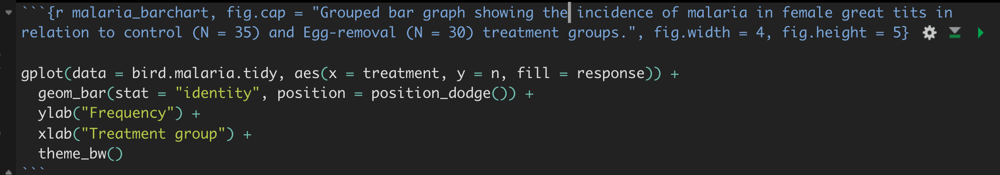
And the result:
ggplot(data = bird_malaria.tidy, aes(x = treatment, y = n, fill = response)) +
geom_bar(stat = "identity", position = position_dodge()) +
ylab("Frequency") +
xlab("Treatment group") +
theme_bw()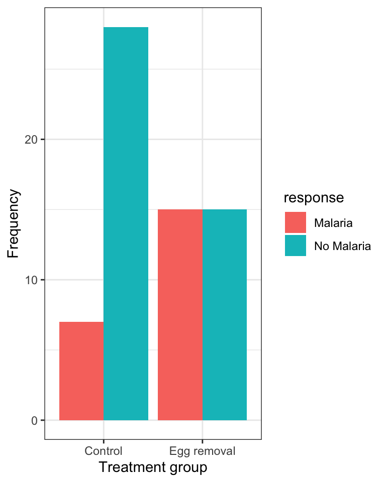
7.2.3 Constructing a stacked relative frequency bar graph
The grouped bar graph above shows the raw counts in each group. That is useful, but it can mislead: if one treatment group contains more birds than the other, a taller bar might simply mean “more birds here”, not “a higher rate of malaria”.
Usually the question we actually care about is a question about proportions: of the birds in this treatment group, what fraction got malaria? To see that directly, we make a stacked relative frequency bar graph, where every bar is scaled to the same height (1, or 100%), so that what you read off the plot is the proportion within each group.
We use the same ggplot and geom_bar functions we have already been using, with one new argument: position = "fill".
For this graph we use the original (raw) bird_malaria tibble, which has one row per bird — not the summarized frequency table.
ggplot(data = bird_malaria, aes(x = treatment, fill = response)) +
geom_bar(position = "fill") +
xlab("Treatment group") +
ylab("Relative frequency") +
theme_bw()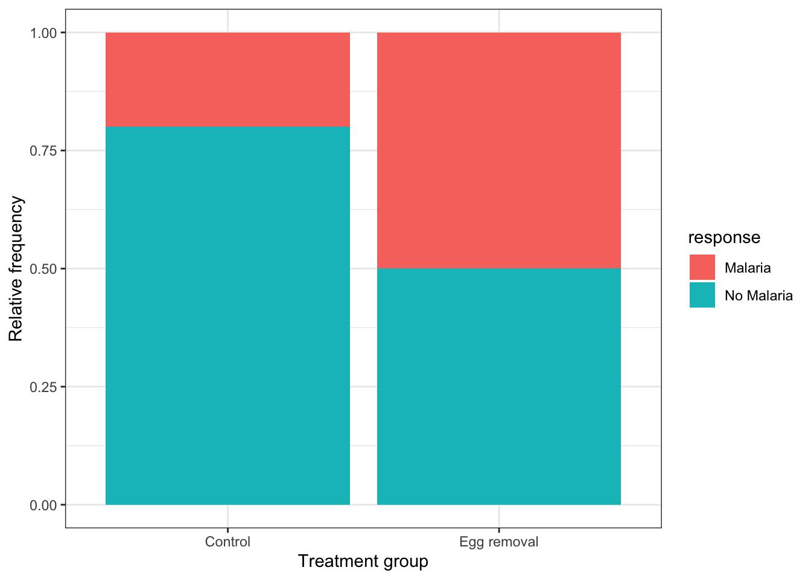
In the code chunk above:
aes(x = treatment, fill = response)puts the explanatory variable on the x-axis, and uses the response variable to colour (“fill”) the stacked segments within each bargeom_bar(position = "fill")tells R to draw bars and to stretch each one to the full height of the plot, so each bar shows relative frequencies (proportions) rather than counts- the y-axis therefore runs from 0 to 1, and each bar is one treatment group’s composition
Note that we did not need to summarize the data into a frequency table first: geom_bar counts the observations for us.
Note
Compare this to the grouped bar graph above. The grouped graph answers “how many birds?”; this one answers “what fraction of birds?”. When your question is about association between two categorical variables, the fraction is almost always what you want.
The trade-off is that this graph no longer shows you how many birds were in each group — so, as always, report the sample sizes in your figure caption.
CautionActivity
Using the penguins dataset, try creating a stacked relative frequency bar graph comparing the relative frequency of penguins belonging to the three different “species” across the three different islands (variable “island”).
7.2.4 Interpreting a stacked relative frequency bar graph
Let’s provide the graph again, and this time we’ll provide an appropriate figure heading in the chunk header, as we learned previously:
ggplot(data = bird_malaria, aes(x = treatment, fill = response)) +
geom_bar(position = "fill") +
xlab("Treatment group") +
ylab("Relative frequency") +
theme_bw()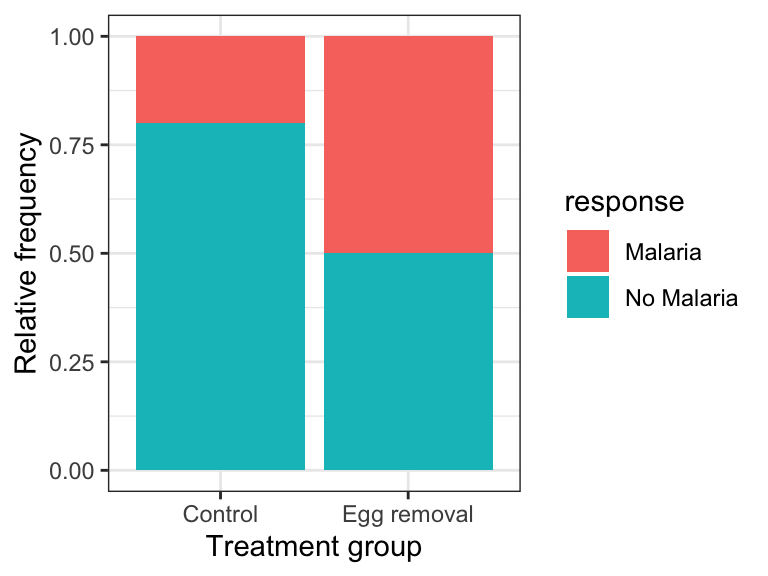
When interpreting this kind of graph, the key is to look at how the relative frequency of the categories of the response variable — denoted by the “fill” colours — varies across the explanatory variable, which is arranged on the x-axis.
For example, in the malaria example above:
“The graph shows that the incidence (or relative frequency) of malaria is comparatively greater among birds in the egg removal treatment group compared to the control group. Only about 20% of birds in the control group contracted malaria, whereas 50% of the birds in the egg-removal group contracted malaria.”
7.3 Visualizing association between two numeric variables
We use a scatterplot to show association between two numerical variables.
We’ll use the ggplot function that we’ve seen before, along with geom_point to construct a scatterplot.
We’ll provide an example using the penguins dataset, examining how bill depth and length are associated among the penguins belonging to the Adelie species.
Note
As shown in the tutorial on preparing and formatting assignments, we can use the filter function from the dplyr package to easily subset datasets according to some criterion, such as belonging to a specific category.
penguins %>%
filter(species == "Adelie") %>%
ggplot(aes(x = bill_length_mm, y = bill_depth_mm)) +
geom_point(shape = 1) +
xlab("Bill length (mm)") +
ylab("Bill depth (mm)") +
theme_bw()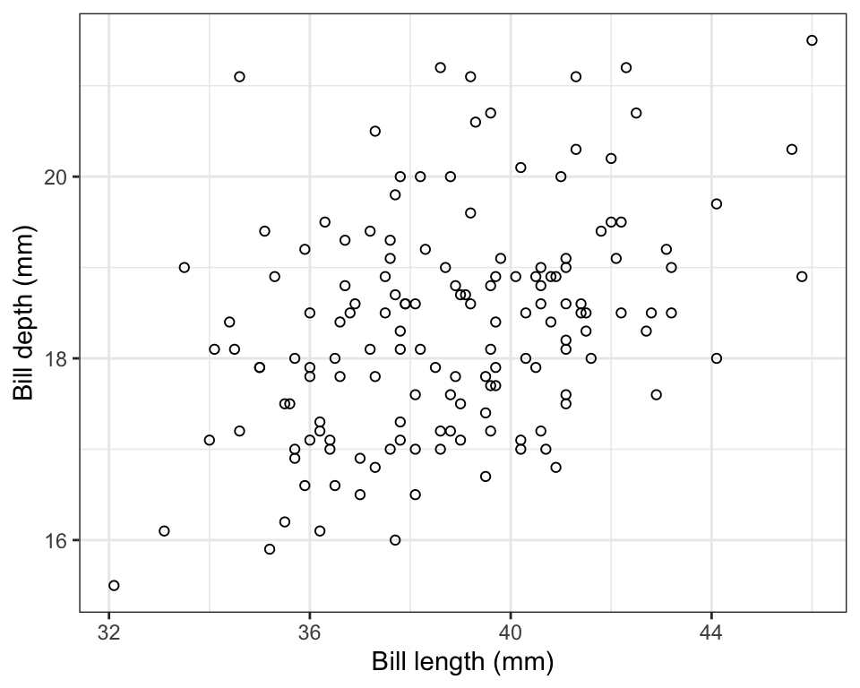
In the code chunk above, we have:
- the input tibble
penguinsfollowed by the pipe (“%>%”) - the
filterfunction with the criterion used for subsetting, specifically any cases in which the “species” categorical variable equals “Adelie” - then we provide the
ggplotfunction and itsaesargument, specifying the x- and y- variables to be used - then we use
geom_pointto tell R to create a scatterplot using points, and specifically “shape = 1” denotes hollow circles - then we have x and y labels, followed by the
theme_bwfunction telling R to use black and white theme
Notice that the figure caption indicates the number of observations (sample size) used in the plot. In a previous tutorial it was emphasized that one needs to be careful in tallying the actual number of observations being used in a graph or when calculating descriptive statistics. For example, there is one missing value (“NA”) in the bill measurements for the Adelie penguins, hence the sample size of 151 instead of 152.
Note
Recall that you can use the glimpse function to get a quick overview of a dataset, and the summary function to figure out how many missing values there are for each variable. You can also use the summarise function, as described previously.
7.3.1 Interpreting and describing a scatterplot
Things to report when describing a scatterplot:
- is there an association? A “shotgun blast” pattern indicates no. If there is an association, is it positive or negative?
- if there is an association, is it weak, moderate, or strong?
- is the association linear? If not, is there a different pattern like concave down?
- are there any outlier observations that lie far from the general trend?
In the scatterplot above, bill length and depth are positively associated, and the association is moderately strong. There are no observations that are strongly inconsistent with the general trend, though one individual with bill length of around 35mm and depth of around 21mm may be somewhat unusual.
CautionActivity
Using the penguins dataset, create a scatterplot of flipper length in relation to body mass, and provide an appropriate figure caption.
7.3.2 Bonus: adding density plots to the margins
A scatterplot shows you how two numeric variables relate to each other, but it does not directly show you how each variable is distributed on its own. We can add that information in the margins, using the ggMarginal function from the ggExtra package.
Don’t worry about replicating this type of graph, but if you can, fantastic!
First we build and store the scatterplot as an object, exactly as we did above, but this time giving it a name so we can add to it afterwards:
bill.scatter <- penguins %>%
filter(species == "Adelie") %>%
ggplot(aes(x = bill_length_mm, y = bill_depth_mm)) +
geom_point(shape = 1) +
xlab("Bill length (mm)") +
ylab("Bill depth (mm)") +
theme_bw()Now we add the density plots in the margins:
ggMarginal(bill.scatter, type = "density")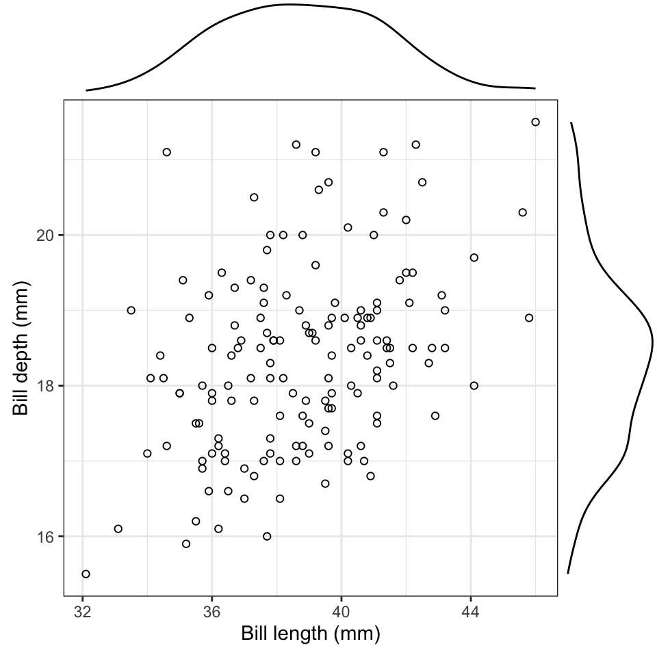
The plot in the top margin shows the distribution of bill length, and the one on the right shows the distribution of bill depth. Consider each as a smoothed-out version of a histogram. Here they tell us that both variables have a single central mode and are reasonably symmetric — useful to know, and not something the scatterplot alone would tell you.
7.4 Visualizing association between a numeric and a categorical variable
To visualize association between a numerical response variable and a categorical explanatory variable, we have a variety of options, and the choice depends in part on the sample sizes within the categories being visualized.
- When sample sizes are relatively small in each category, such as 20 or fewer, use a stripchart
- When sample sizes are larger (>20), use a violin plot, or less ideal, a boxplot.
We’ll use locust serotonin data set from the text book. Consult figure 2.1-2 in the text for a description.
Note
Always remember to get an overview of the dataset before attempting to create graphs, and not only for establishing sample sizes. If you get an overview of the locust dataset, you’ll see we have a numeric response variable “serotonin_level”, and a categorical (explanatory) variable “treatment_time” with three levels — 0, 1, and 2 (hours). Even though the category labels look like numbers, treatment_time is already stored as a “factor” — R’s type for a categorical variable with a fixed set of categories — so we can treat it as an ordinal categorical variable without any extra work.
You can always confirm a variable’s type using the class function:
class(locust$treatment_time)
#> [1] "factor"If a variable like this one ever arrived coded as numeric in your own data, you would convert it using the as.factor function, e.g. locust$treatment_time <- as.factor(locust$treatment_time). That’s not needed here, since it’s already a factor.
Before creating a stripchart, it’s a good idea to prepare a table of descriptive stats for your numerical response variable grouped by the categorical variable.
CautionActivity
Using what you learned in a previous tutorial, create a table of descriptive statistics of serotonin levels grouped by the treatment group variable.
7.4.1 Create a stripchart
Now we’re ready to create a stripchart of the locust experiment data. Note that we’re not yet ready to add “error bars” to our strip chart; that will come in a later tutorial.
We’ll provide the code, then explain after:
locust %>%
ggplot(aes(x = treatment_time, y = serotonin_level)) +
geom_jitter(colour = "black", size = 3, shape = 1, width = 0.1) +
xlab("Treatment time (hours)") +
ylab("Serotonin (pmoles)") +
ylim(0, 25) +
theme_bw()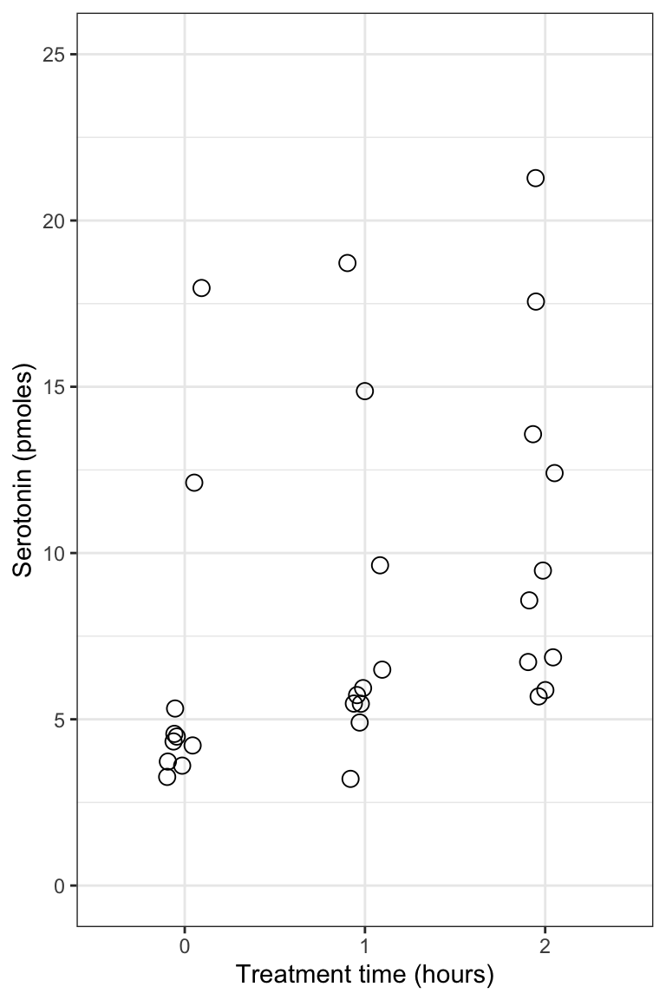
- the
ggplotline of code is familiar - the new function here is the
geom_jitterfunction that simply plots the points in each group such that they are “jittered” or offset from one-another (to make them more visible). Its arguments include ‘colour = “black”’ telling R to use black points, “size = 3” to make the points a little larger than the default (1), “shape = 1” denoting hollow circles, and “width = 0.1” telling R to jitter the points a relatively small amount in the horizontal direction. Feel free to play with this arguments to get a feel for how they work. - the x- and y-axis labels come next
- then we specify the minimum and maximum limits to the y-axis using the
ylimfunction
Notice how all the data are visible! And it’s evident that in the control and 1-hour treatment groups the majority of locusts exhibited comparatively low levels of serotonin (note the clusters of points).
7.4.2 Create a violin plot
Given that violin plots are best suited to when one has larger sample sizes per group, we’ll go back to the penguins dataset for this, and evaluate how body mass of male penguins varies among species.
Let’s first find out more about the data for the male penguins, so that we can include sample sizes in our figure captions. Specifically, we’ll tally the number of complete body mass observations for each species, and also the number of missing values (NAs).
We’ll combine the filter function with the group_by function that we learned about in a previous tutorial:
penguins %>%
filter(sex == "male") %>%
group_by(species) %>%
summarise(
Count = sum(!is.na(body_mass_g)),
Count_NA = sum(is.na(body_mass_g)))
#> # A tibble: 3 × 3
#> species Count Count_NA
#> <fct> <int> <int>
#> 1 Adelie 73 0
#> 2 Chinstrap 34 0
#> 3 Gentoo 61 0This is the same code we used previously for calculating descriptive statistics using a grouping variable (though we’ve eliminated some of the descriptive statistics here), but we inserted the filter function in the second line to make sure we’re only using the male penguin records.
We now have the accurate sample sizes for each species (under the “Count” variable) we need to report in any figure caption.
We use the familiar ggplot approach for creating violin plots.
Note
When using the ggplot function, we can assign the output to an object. We can then subsequently add features to the plot by adding to the object. We’ll demonstrate this here.
Let’s assign the basic violin plot to an object called “bodymass.violin”, and we’ll explain the rest of the code after:
bodymass.violin <- penguins %>%
filter(sex == "male") %>%
ggplot(aes(x = species, y = body_mass_g)) +
geom_violin() +
xlab("Species") +
ylab("Body mass (g)") +
theme_bw()- We assign the output to the object called “bodymass.violin”, and tell R which data object we’re using (penguins)
- We then
filterthe dataset to include only male penguins (sex == “male”), and note the two equal signs and the quotations around “male” - Then the familar
ggplotwith itsaesargument - Now the new
geom_violinfunction, and it has optional arguments that we haven’t used (see help file for the function) - Then the familiar labels and theme functions
Let’s now have a look at the graph, and to do so, we simply type the name of the graph object we created:
bodymass.violin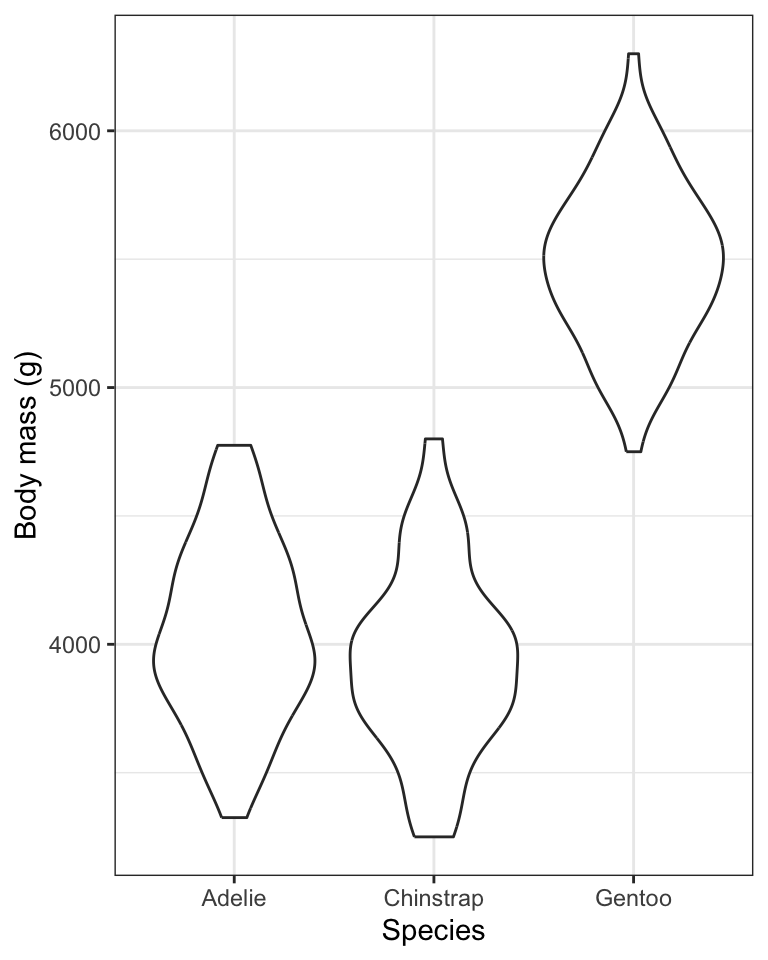
One problem with the above graph is that we don’t see the individual data points.
We can add those using the geom_jitter function we learned about when creating stripcharts.
Here’s how we add features to an existing ggplot graph object, and we can again create a new object, or simply replace the old one.
Here, we’ll create a new object called “bodymass.violin.points”:
bodymass.violin.points <- bodymass.violin + geom_jitter(size = 2, shape = 1, width = 0.1)And now show the plot:
bodymass.violin.points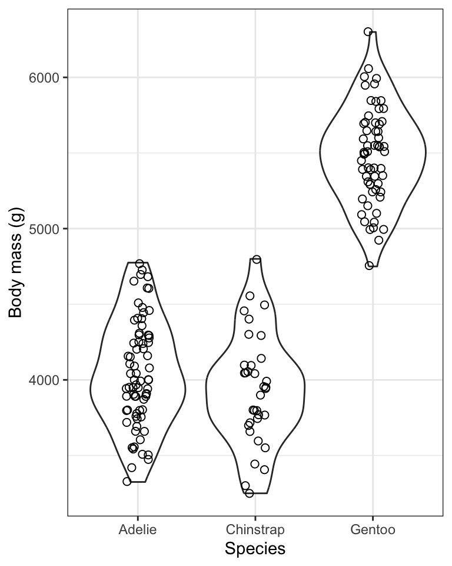
TIP: If you wish to run all the code at once in a single chunk to create a figure, rather than adding new code to an existing object, here’s what you’d include in your chunk (but here we don’t show the chunk header that would include the caption):
penguins %>%
filter(sex == "male") %>%
ggplot(aes(x = species, y = body_mass_g)) +
geom_violin() +
geom_jitter(size = 2, shape = 1, width = 0.1) +
xlab("Species") +
ylab("Body mass (g)") +
theme_bw()The violin plot is designed to give an idea of the frequency distribution of response variable values within each group. Specifically, the width of the violin reflects the frequency of observations in that range of values. Think of each violin as a smoothed-out histogram, turned on its side and mirrored.
We can see, for example, that for all three species of penguin there is a bulge in the middle indicating that there is a central mode to the body mass values in each group, with fewer values towards lower and higher extremes. The frequency distribution for the Gentoo species approximates a “bell shape” distribution, for example (the blue data).
7.4.3 Creating a boxplot
Here we’ll learn how to create basic boxplots, and also superimpose boxplots onto violin plots.
In future tutorials we’ll learn how to add features to these types of graphs in order to complement statistical comparisons of a numerical response variable among categories (groups) of a categorical explanatory variable.
Here is the code for creating boxplots, again using the penguins body mass data, and this time the geom_boxplot function:
penguins %>%
filter(sex == "male") %>%
ggplot(aes(x = species, y = body_mass_g)) +
geom_boxplot() +
xlab("Species") +
ylab("Body mass (g)") +
theme_bw()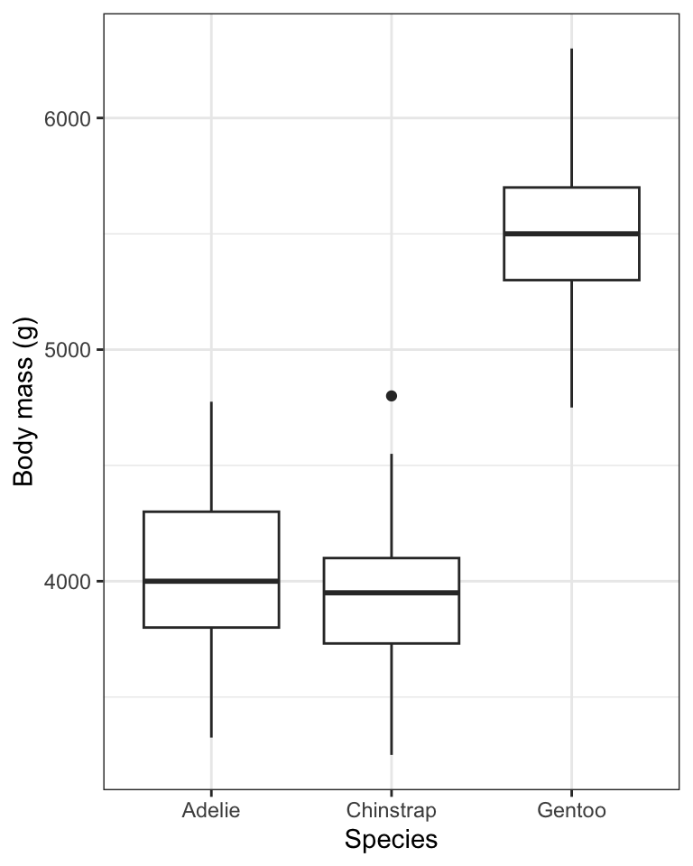
For more information about the features of the boxplot, look at the help file for the geom_boxplot function:
?geom_boxplot
Note
The first time you include a boxplot in a report / lab, be sure to include in the figure caption the details of what is being shown. You only need to do this the first time. Subsequent boxplot figure captions can refer to the first one for details.
When sample sizes are large in each group, like they are for the penguins data we’ve been visualizing, the most ideal way to visualize the data is to combine violin and boxplots. We’ll do this next!
7.4.4 Combining violin and boxplots
Superimposing boxplots onto violin plots (and of course, showing individual points too!) provides for a very informative graph.
We already have a basic violin plot object created, called “bodymass.violin”, so let’s start with that, then add the boxplot information, then superimpose the points. We need to do it in that order, so that the points become the “top” layer of information, and aren’t hidden behind the boxplot or violins.
bodymass.violin +
geom_boxplot(width = 0.1) +
geom_jitter(colour = "grey", size = 1, shape = 1, width = 0.15)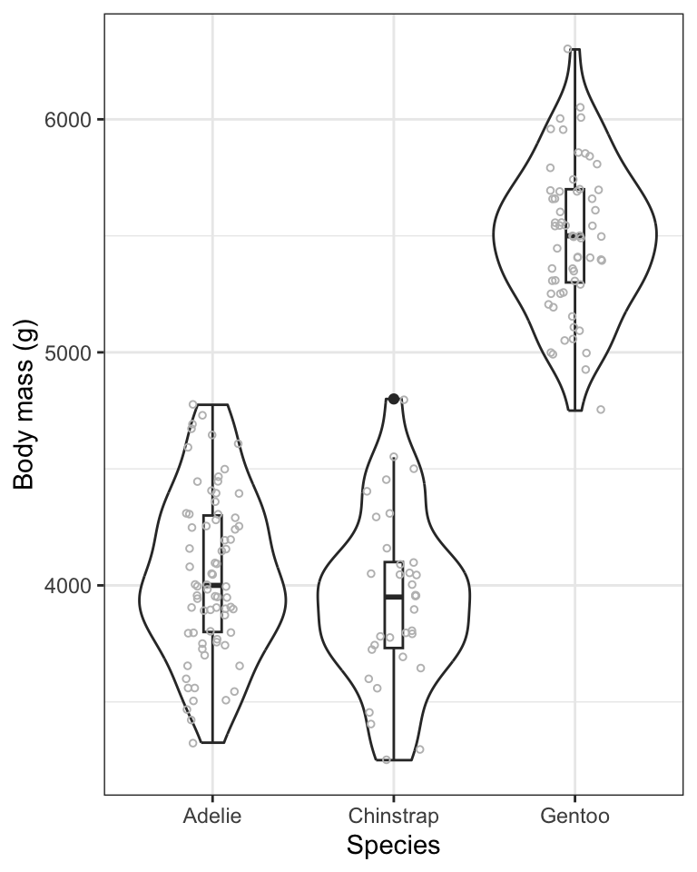
- We start with the base violin plot object “bodymass.violin”
- We then add the boxplot using
geom_boxplot, ensuring that the boxes are narrow in width (width = 0.1) so they don’t overwhelm the violins - We then add the individual data points using
geom_jitter, and this time using the colour “grey” so that they don’t obscure the black boxes underneath, and making them a bit smaller this time (size = 1), and keeping them as hollow circles (shape = 1), and this time spreading them out horizontally a bit more (width = 0.15)
TIP: if you’d rather do all the code in one chunk, without creating objects, here’s what you’d include:
penguins %>%
filter(sex == "male") %>%
ggplot(aes(x = species, y = body_mass_g)) +
geom_violin() +
geom_boxplot(width = 0.1) +
geom_jitter(colour = "grey", size = 1, shape = 1, width = 0.15) +
xlab("Species") +
ylab("Body mass (g)") +
theme_bw()
Note
It often takes some playing around with argument values before one gets the ideal graph. For example, in the above graph, try changing some of the values used in the geom_jitter function.
CautionActivity
Using the penguins dataset, and only the records pertaining to female penguins, create a combined violin / boxplot graph showing bill length in relation to species. Include an appropriate figure caption.
7.4.5 Interpreting stripcharts, violin plots and boxplots
In general, stripcharts, violin plots, and boxplots are used to visualize how a numeric variable varies or differs among categories (groups) of a categorical variable. For instance, it’s pretty obvious from the violin plots above that Gentoo penguins have, on average, considerably greater body mass than the other two species. We will wait until a future tutorial to learn more about interpreting violin / boxplots, because there we learn how to add more information to the graphs, such as group means and measures of uncertainty. For now, you should be comfortable interpreting any obvious patterns in the plots.